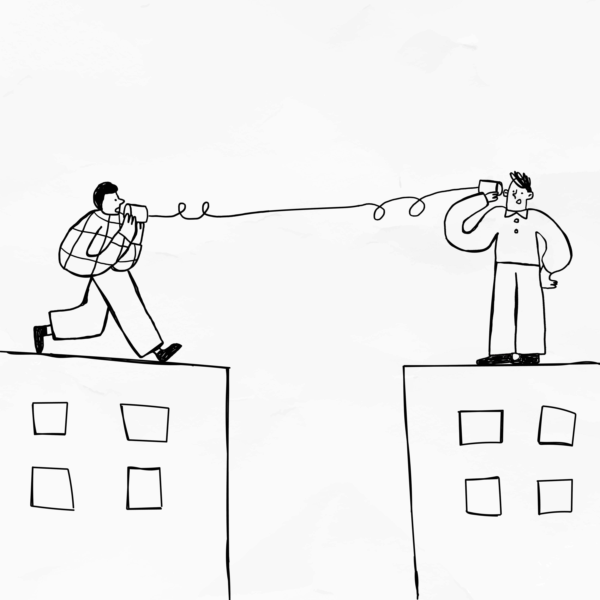

La comunicación en función del contexto
Como hemos visto, no nos comunicamos igual en todas las situaciones. El lenguaje cambia según el contexto, el destinatario y la intención. Saber adaptar nuestra forma de comunicarnos es fundamental para evitar malentendidos y expresarnos de manera adecuada.

A continuación, vamos a ver cómo varía el lenguaje según el contexto.
Lenguaje informal
Se utiliza en contextos cercanos, como cuando hablamos con amigos o familiares.
Sus características principales son:
- Uso de abreviaturas (“q”, “xq”, “tmb”)
- Empleo de emojis 😊😂
- Frases cortas y rápidas
- Tono cercano y espontáneo
- Menor preocupación por la corrección
Este tipo de lenguaje es útil porque permite comunicarnos de forma rápida y natural, pero no es adecuado en todos los contextos.
Lenguaje formal
Se utiliza en situaciones académicas o profesionales, cuando nos dirigimos a personas con las que no tenemos confianza o en contextos más serios.
Sus características son:
- Corrección ortográfica y gramatical
- Uso de un vocabulario más cuidado
- Frases completas y bien estructuradas
- Ausencia de abreviaturas o emojis
- Tono respetuoso
Este tipo de lenguaje transmite seriedad, respeto y claridad.
El tono, la claridad y la intención del mensaje
Cuando nos comunicamos en Internet, no solo importa lo que decimos, sino cómo lo decimos y con qué intención. A diferencia de la comunicación cara a cara, en los entornos digitales no contamos con gestos, miradas o entonación de la voz, por lo que el mensaje puede interpretarse de formas diferentes a las que pretendíamos.
Por eso, es fundamental que nuestros mensajes sean claros, adecuados al contexto y respetuosos. Un mismo contenido puede generar sensaciones distintas según cómo se exprese. Por ejemplo, un mensaje muy breve o sin elementos que indiquen el tono puede parecer frío, brusco o incluso enfadado, aunque no sea esa la intención.
Antes de enviar un mensaje, conviene preguntarse si se entenderá bien, si es apropiado para la situación y si puede ser interpretado de forma negativa. Cuidar estos aspectos ayuda a evitar malentendidos y a mejorar nuestra comunicación en entornos digitales.
Para ampliar
Si no te ha quedado claro, a continuación podrás visualizar un vídeo en el que se explica qué es el contexto en la comunicación.